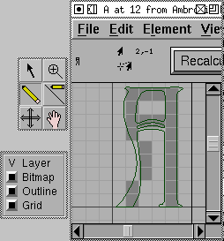
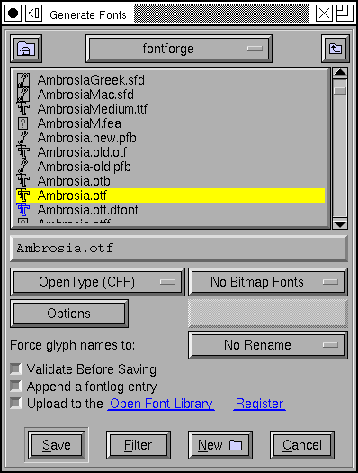
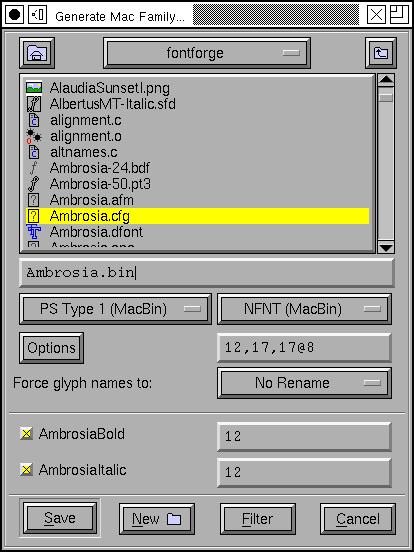

10. Checking and generating a font¶
10.1. Checking a font¶
After you have finished making all the glyphs in your font you should check it for inconsistencies. FontForge has a command, Element->Find Problems which is designed to find many common problems.
Simply select all the glyphs in the font and then bring up the Find Problems dialog. Be warned though: Not everything it reports as a problem is a real problem, some may be an element of the font’s design that FontForge does not expect.
The dialog can search for problems like:
Stems which are close to but not exactly some standard value.
Points which are close to but not exactly some standard height
Paths which are almost but not quite vertical or horizontal
Control points which are in unlikely places
Points which are almost but not quite on a hint
…
I find it best just to check for a similar problems at a time, otherwise switching between different kinds of problems can be distracting.
10.2. Bitmaps¶
At this point you might want some bitmaps to go with the outline font (this is not compulsory). Go to and select the pixel sizes you want bitmaps in (Note, that on X and MS windows pixel sizes often do not correspond exactly to point sizes. You can then use the bitmap editor (Window->Open Bitmap) to clean up the bitmaps, or you can generate your bitmap fonts and then use someone else’s bitmap editor to clean them up.
Bitmaps are discussed in more detail in the next section.
10.3. Generating a font¶
If you save your file it will be saved in a format that only FontForge understands (as far as I know anyway). This is not very helpful if you want to use the font.
Instead you must use File->Generate to convert your font into one of the standard font formats. FontForge presents what looks like a vast array of font formats, but in reality there are just several variants on a few basic font formats: PostScript Type 1, TrueType, OpenType (and for CJK fonts, also CID-keyed fonts).
You also have a choice of bitmap formats. FontForge supports bdf (used by X), mac NFNT (used by the Mac), Windows FNT (used by Windows 2.0 I think) and storing bitmaps inside true (or open) type wrappers.
10.4. Font Families¶
After you have generated a font, you probably want to generate a sequence of similar fonts. In Latin, Greek and Cyrillic fonts italic (or oblique), bold, condensed, expanded styles are fairly common.
Fonts with different styles in the same family should share the same Family Name (in the Element->Font Info->Names dialog). The Font Name should be the Family Name with the style name(s) appended to the end, often preceded by a hyphen. So in the font family “Helvetica” all fonts should have the Family Name set to “Helvetica”. The plain style could be called simply “Helvetica” or “Helvetica-Regular”, the bold style “Helvetica-Bold”, the oblique (Helvetica doesn’t have a true italic) “Helvetica-Oblique”, etc.
FontForge has a menu Element->Style which is designed to help you create different styles (bold, italic, oblique, condensed, extended, smallcaps,…) of a font a plain face. None of these transformations is perfect, be sure to check the results.
The Element->Transform->Transform->Skew command can turn a plain font into an Oblique one. Creating a true italic font is generally a bit more complex, the shape of the “a” changes dramatically to “a”, the “f” gains a descender as “f”, the serifs on “ilm” etc. become rounded as “ilm” and there will probably be other subtle differences. Also, after having skewed a font you should Element->Add Extrema.
If you already have a “Bold” and a “Plain” style of a font (and each glyph has the same number of points in the same order), you can use the Element->Interpolate Font command to generate a “DemiBold” style.
TrueType fonts (and Windows) support a very fine gradation of stem thicknesses (the Mac really only understands Plain and Bold). If you go to Element->Font Info->OS/2 you can set the weight to be any value between 0 and 999 (with plain generally being at 400 or 500, and Bold at 700). TrueType fonts also support a range of widths (while the Mac only supports condensed, plain and expanded).
On Windows machines, as long as you get the names right, the system should be able to figure out what fonts go into what families. But on the Mac the situation is (or was, it is changing and I don’t understand all the new extensions yet) more complicated. The Mac supports a limited range of styles (plain, italic, bold, outline, condensed, expanded and combinations of these) anything outside these must go into a separate family. Then a special table needs to be constructed (called the FOND) which holds pointers to the various fonts in the family. If you open all the fonts you want to be in a given family (and if they have been given the proper names) and then from the plain font select File->Generate Family. This will list all the fonts that FontForge thinks belong to the same family as the current font and will allow you to generate a FOND structure as well as font files for all family members (sometimes all the fonts live in one file, sometimes they don’t, it depends on the font format chosen).
10.5. Final Summary¶
So you have made a new font. But it does you no good just sitting on your disk, you must install it on your machine. On some systems this is as simple as just dragging the new font into your system Fonts folder, but on other systems there is a fair amount work involved still. See the Installing fonts FAQ.
For a tutorial about FontForge’s scripting mechanism click here.